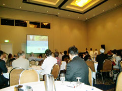
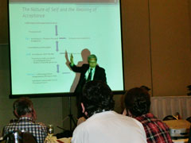
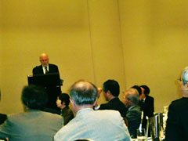
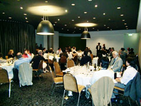
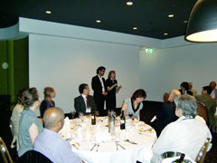

第7回国際森田療法学会がオーストラリアで開催される！
2010年3月4〜6日にかけて、オーストラリア・メルボルンにて第7回国際森田療法学会が開催されました。大会の会長には、ベグ・ルバイン先生（オーストラリアモナッシュ大学）、副会長には渡邊直樹先生（関西国際大学教授）が就任され、メルボルンのセベル・アルバートパーク・ホテルにて行われました。
当大会の概要は以下のとおり。
概要
- 日 時：2010年3月4日（木）・5日（金）・6日（土）
- 場 所：オーストラリア・メルボルン／セベル・アルバートパーク・ホテル
- 大会長：ベグ・ルバイン（オーストラリアモナッシュ大学博士）
- 副会長：渡邊直樹（関西国際大学教授）
- 後 援：日本森田療法学会、モナッシュ大学、タスマニア大学、
公益財団法人メンタルヘルス岡本記念財団
日程と内容
2010年3月4日（木）：大会1日目

- 開会セレモニー（12:30-1:30）
アボリジニ・グループおよび神道（Wataru Kaya）による
イベント - 開会・歓迎・特別講演（13:00-13:30）
「歓迎のあいさつー森田療法による自己の本質と受容の意味ー」
・北西憲二（日本森田療法学会理事長） - 開会講演（14:20-14:45）
「西洋への転移に伴う森田療法の歴史的・哲学的記録」
・ペグ・ルバイン（第7回国際森田療法学会大会長）

- 対話による導入ワークショップ（14:50-17:00）
ここでは5つのテーマ別に、司会者からの導入的講義と対話形式による 討議が行われる。各テーマごと（カラーで識別）に選択された演者が演 題を発表した。- 空色（スカイ）グループ；
「日本人を背景にした森田療法への入門」
・司会：北西憲二（日本森田療法学会理事長）
リチャード・スパッツ（米国西ミシガン大学博士） - すもも色（プラム）グループ：
「リサーチとエビデンスの収集」
・司会：石山一舟（カナダブリテイッシュコロンビア大学博士）
中村敬（東京慈恵会医科大学精神医学教室教授） - オレンジグループ：
「傷つきやすい人々への治療 」
・司会：ディ・クリフトン
（サイコオンコロジー&精神医学ディレクター） - 苔色（モス）グループ：
「カウンセラー開発とコミュニケーション教育における森田療法」
・司会：ブライアン・オガワ（米国ウオッシュボーン大学博士）
ロバート・ホワイト（オーストラリアモナッシュ大学博士） - 石色（ストーン）グループ：
「森田療法の現象学とエコロジー。
森田療法と実践における禅と神道を考える」
・司会：ウォルターディモッチ（ドイツルッセルドルフ大学博士）
賀陽済（田無神社 宮司）
- 空色（スカイ）グループ；

- 基調講演（17：00-17:50）
「複雑性を尊重する」
・グレハム・スミス（オーストラリアモナッシュ大学医学部医学博士） - ウェルカム・レセプション（18:00-19:00）


2010年3月5日（金）：大会2日目
- 開演講演（9:00-10:00）
「外来森田療法のガイドラインについて」
・北西憲二（日本森田療法学会理事長）
・中村敬（東京慈恵会医科大学精神医学教室教授） - 基調講演（10:30-11:15）
「アルダースクールにおけるアートセラピーについて」
・ナンシー・スレイター（米国アルダー研究所セラピスト） - 特別セッション（1）（11:15-13:00）／GW2会場
「短編ドキュメンタリー映画／森田療法におけるパラドックスと科学性」 - 特別セッション（2）（11:15-13:00）／Element 会場
- 森田療法の適応の可能性（11:15-11:45）
・石山一舟（カナダブリティッシュコロンビア大学博士） - 西洋に対する古典的森田療法の適応
・ブライアン・オガワ（米国ウオッシュボーン大学博士）
- 森田療法の適応の可能性（11:15-11:45）
- 対話別のワークショップ（14:00-17:30）
- 空色（スカイ）グループ：
「精神療法の比較研究」
・舘野あゆむ（東京慈恵会医科大学森田療法センター） - 他すもも色（プラム）グループ：
「ワークショップ／外来森田療法の調査研究」
・デビット・リチャード（英国エクセター大学博士）他 - オレンジグループ：
「アジアとアフリカ難民に森田療法の生命力を生かす」
・ソシエラ・ティム
（カンボジア・ポストジェノサイド開発精神心理保険チャレンジャーズ医学博士）他
「トラウマ治療に対する最新の森田療法をベースにした
世界的プロジェクト」
・ディディアー・バートランド（フランスAFESIPディレクター）他 - 苔色（モス）グループ：
「森田療法における治療プロセスと動的推論」
・デビット・チョーン
（オーストラリア心理カウンセリングレフトバンク研究所博士）他
「カウンセリング・心理学のトレーニング＆スーパービジョン」
・石山一舟（カナダブリテイッシュコロンビア大学博士）他
- 空色（スカイ）グループ：
- 特別セッション（3）（15:30-18:00）／GW2 会場
「映画／ヒポクラテスと蓮の花」
・野中剛（ランドスケープ代表） - プレディナー・ドリンク（18:30-19:00）
- カンファレンス・ディナー（19:00 から終了まで)
2010年3月6日（土）：大会3日目
- 森田療法の国際委員会（8:30-9:30）（クローズド会議）
- 特別講演（9:40-10:40）
「エゴの喪失／心理プロセスにおける弓道セラピストの可能性とは」
・ウォルター・ディモッチ（ドイツルッセルドルフ大学医学博士） - 特別セッション（1）（10:40-12:30）／GW2 会場
「ドキュメンタリー映画／蝶の舞はどこにいった？」 - 特別セッション（2）（10:40-12:30）／GW1 会場
「体験ワークショップ：心理社会的な健康のためのアートの取り組み」
・ナンシー・スレイター（米国アルダー研究所セラピスト）他 - 対話別のワークショップ（13:30-15:00）
- 空色（スカイ）グループ：
「文化、日本の将来と他の精神療法との比較」
・司会：中村 敬（東京慈恵会医科大学精神医学教室教授）、渡邊直樹（関西国際大学教授） - すもも色（プラム）グループ：
「リサーチとエビデンスの収集」
・司会：北西憲二（日本森田療法学会理事長）、デイビッド・リチャード（エクスター大学） - オレンジグループ：
「傷つきやすい人々への治療 」
・司会：Ｄ．ベルトランド（ラオスＡＦＰＳＩＰ所長）、ソテアラ・キム（カンボジア・精神科医） - 苔色（モス）グループ：
「カウンセラー教育と行動的で治療力のある活動」
・司会：石山一舟（カナダブリテイッシュコロンビア大学博士）他 - 石色（ストーン）グループ：
「パラドックス、禅、実存主義」
・司会：ウォルター・ディモッチ（ドイツルッセルドルフ大学博士）他
- 空色（スカイ）グループ：
- 未来への方向（15:30-17:00）
（質疑・応答とディスカッション） - 閉会式（17:00）